Ranking Walking With Dinosaurs
The Criteria
Firstly, we must determine the criteria through which glorious paleomedia franchises such as this must be compared against.
Visuals
The greatest strength of a paleodocumentary must be the visuals, not least because that is what nature documentaries are known for, but in order to properly sell the illusion that it is a nature documentary. The CGI and animatronics ought to be convincing enough, and blend well enough into the backgrounds. Those backgrounds themselves, whilst this is hardly ever an issue for Walking With…, should be beautiful and atmospheric. Finally, shot composition, colour, and variety complete this category.
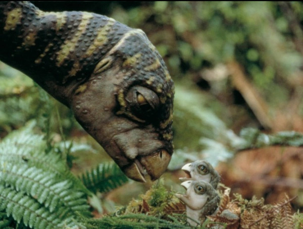
Close-up from Walking with Dinosaurs (BBC, 1999) like all images in this article unless expressed otherwise. Demonstrative of the value physical animatronics and puppets can bring to paleodocumentaries.
Storytelling
What sets a paleodocumentary apart from, say, the standard junk produced by Attenborough, is the capability to tell a story. These episodes are pieces of entertainment, and all entertainment is a form of storytelling. Cohesion of narrative and pacing play a part here, alongside any themes (that should be present).
Ambience
Perhaps the most nebulously defined criteria, but essential nonetheless. Here, we look primarily at the soundtrack. As a number of YouTube videos you may find for yourself demonstrate, a scene can feel radically different without the expected soundtrack. There exists an art to guiding an audience through the correct emotional and thematic beats with the correct music. We also consider the noises the creatures make, as well as the general atmospheric ‘feel’ of the episode. This is a lower priority category, and thusly is only ranked out of 5.
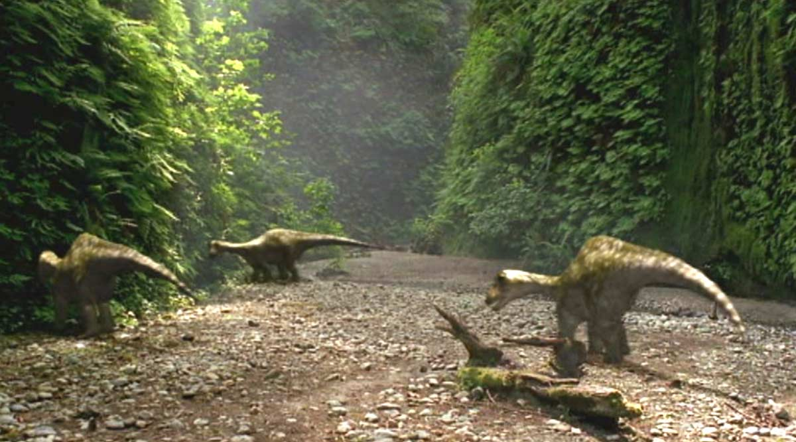
A Californian (or maybe Jurassic) canyon. The narrow, lush walls provide a perfect backdrop for an atomospheric ambush.
Creatures
Here, we look at the array of animals portrayed, in terms of both the diversity and the quality. Each episode needs to create a cohesive ecosystem full of organisms with meaningful roles. The animal itself should have a good design, and about the characteristics we’d expect for this species. Most importantly, the iconicity of the creatures is vital to an episode’s score. Great credit should be given to a definitive depiction of an animal. Furthermore, an episode may have a Neanderthal, but if it is a lame and forgettable portrayal, name alone cannot carry this score.
Why No Accuracy?
A critical omission here is any sense of ‘accuracy’, or scientific realism. The reasons for this are three-fold.
1) It is often difficult to retroactively see what was scientifically accepted in the past in a field like paleontology. Even now, for instance, the ongoing debate over Spinosaurus’ body and nautical habits may seem up to debate. Yet if someone fourty years from now looked back, they may see that the correct arguments were out there, therefore wrongly assert we knew what Spinosaurus looked like.

Honey, a new Spinosaurus has dropped! Spinosaurus aegyptiacus' appearance is as hotly debated as the spinal structure of the Tully Monster, and will inevitably be revised in the future. This is why I like vintage paleoart: it can never change. The truth is a slippery thing in the world of science.
2) Reviewing should be timeless. What is or isn’t scientific knowledge is time-dependent. I don’t especially wish for my post to be irrelevant in a few years time.
3) Accuracy doesn’t matter. As long as the consumer is consuming knowledge, is it important what it is? Would you rather they returned to Love Island?
It is vital to note, lastly, that these ratings will be normalised for Walking With… franchise. There would be no point in taking a 6 in the visuals category to represent the average for television shows. Otherwise you’d be comparing the glories of the Postosuchus death scene to the slop of another episode of a pointless, unfunny BBC centre-left comedy panel show, and all WWD episodes would therefore be a 10.
So with that out of the way…
New Blood
Visuals: 6
We begin with a 6, what conventional rankings define as an ‘average’ rating. Whilst I'm sure the merging of CGI characters with stunning real-life locations was revolutionary at the time (and indeed is seemingly revolutionary these days given how nobody uses this technique anymore), this gets better as it goes along.
This series consistently struggles with ‘dusty’ environments. There is something about the clouds of dust that make creatures, which already don’t look the greatest in 2026, appear low-resolution. One of the series greatest innovations is filming the animal’s responses to their environment on film… which they don’t do here often. Perhaps because dust needs to be added in front of the creatures, as well?
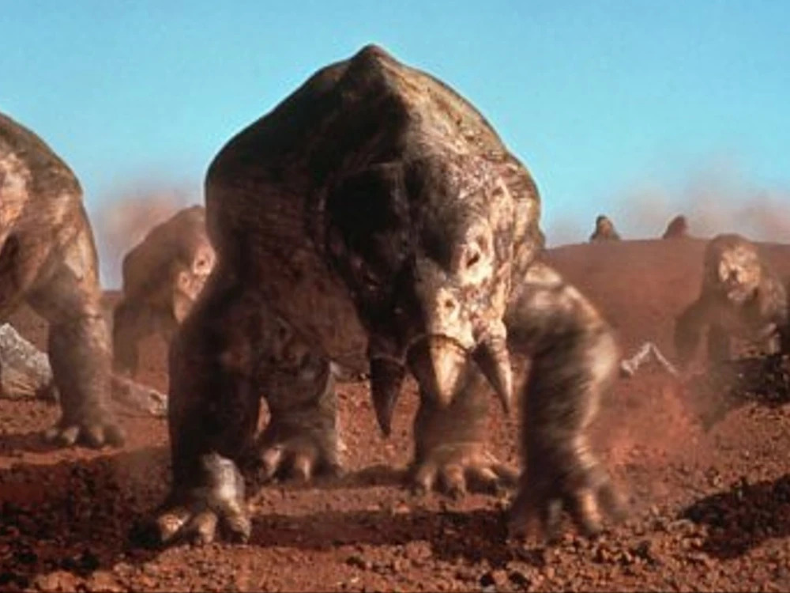
I promise I did not edit down the resolution of this image. Exemplary of the dust-based problems we will see repeatedly throughout the series. It emphasises the poor Placerias model.
But… the animatronics here are a series high. The unmatched aura of the Postosuchus death scene is especially noteworthy. The Postosuchus itself has remarkable screen presence.
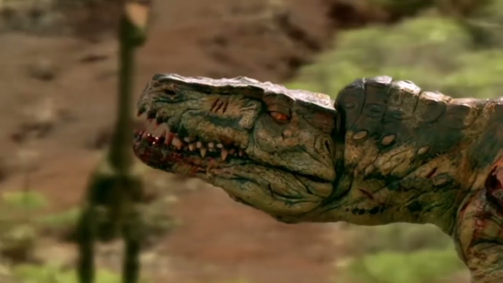
The beauty of this half-zombified titan of its age approaching its death is a highlight of all television. The way the physical set merges with the CGI scavengers, including the subtle breathing of the Postocushus and the flesh's momentum is outstanding.
Storytelling: 9
By far this episode’s strongest attribute. It’s the story of a whole world’s annual suffering, framed through three excellent central protagonists, and who wins or loses is symbolic of the upcoming world, all culminating in the Plateosaurus’ arrival signalling the age of dinosaurs. I always find it beautiful when the Coelophysis babies are the only thing the Cynodonts eat, as payback for their own babies’ fate.
Ambience: 4
“Death of the Postosuchus”. Do I need to say more? In all seriousness, the soundtrack can be a little sparse throughout the middle, and the Coelophysis barks sound rancid.
Creatures: 8
The clearest example of what my scoring system is trying to reward can be seen with the Postosuchus. Nobody has ever heard of Rauisuchidae before or since, and this is the depiction of this animal. Cynodonts are especially strong, being the archetypal ‘hardy survivor’, but you feel an actual emotional connection to our little ancestor. What’s holding it back? The Placerias for one. But also a lack of variety in animals present.
Time of the Titans
Visuals: 10
I think we need to be frank in asserting the series doesn’t get any better than this. This series has strived on the grand, theatric and epic, and it doesn’t get any better than an episode designed to feature the peak of the dinosaurs’ reign. Conguillío National Park presents a perfect lush prairie field, and the most iconic background of the series. This demonstrates one of the greatest strengths of the series, as opposed to, say, Prehistoric Planet: the beautiful environments. Where the CGI fails (cough Allosaurus cough cough), the backgrounds and cinematography more than make up for it.
Storytelling: 7
Our first instance of a common trope in this series: following a single animal throughout its life, and this is something the franchise does expertly. Future installments will take this idea and further our emotional connection to this individual animal, whereas this rendition doesn’t quite know whether to follow one distinct individual or a creche. Whilst the pacing is superb, it lacks a little in thematic depth.
Ambience: 5
When you invent the theme music for this franchise, do you expect anything less? Majesty embodied.
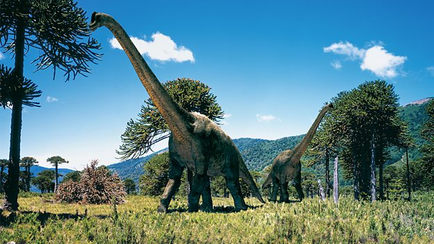
Also majesty embodied. The episode even has its own little Brachiosaurus altithorax reveal, which is a nice touch.
Creatures: 9
Like European billionaires, this episode inherited an already brilliant cast of characters for the Morrison formation (+- Saurophaganax. We love him really but he isn’t in this episode so to me, he’s not real. Isn’t that a brilliant argument for this episode though?), and they all behave as we’d expect.
We have a real sense of danger around the Allosaurus, but he will be improved upon greatly later. Despite the titanic achievement of the Diplodocus depiction, Ornitholestes lets the episode down. Take notes episode 6 on how to deliver on potential.
Cruel Sea
Visuals: 7
Diversity is our strength, the left tell us. And here, they are absolutely correct.
The positives first. The ocean is a master of disguise for subpar 1990s CGI, boosting the animals’ appearance dramatically. The shafts of light, the murk, and the deep blue of the ocean are perfect. Yet, that’s all we seem to see for most of the episode (ignoring the passable coastal environments). When your background is homogenous, can your cinematography ever be elite? The ocean, whilst gorgeous, limits the visual vocabulary.
Storytelling: 4
Channelling its inner Joe Biden, this story is quite confused. You've essentially got: Ophthalmosaurus birth/survival plus Eustreptospondylus scavenging plus Liopleurodon hunting plus a deux ex machina storm. All these threads occasionally interact sometimes. No greater sign of this episode’s malpractice is when they tease a symbolic ending of the sharks swarming around the bleeding Liopleurodon, ready to replace the marine reptiles as Top Dog, only for a random storm to instead beach the Liopleurodon. To this day, having seen this episode dozens of times, I cannot recall what happens to our supposed main character of the Opthalmosaurus.
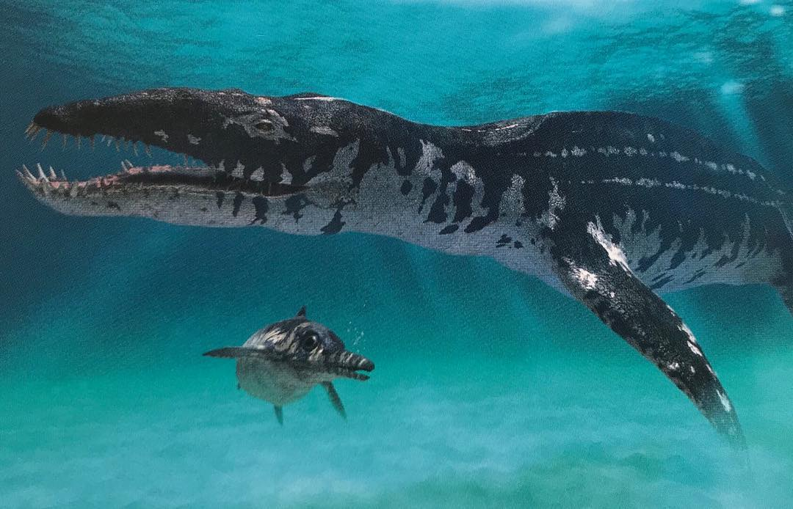
A collection of 'main characters' in this episode. The Liopleurodon in this episode is best known for its farcical size estimate of 25m long, which they have the balls to pretend makes it the largest predator ever. The current champion is the Ichtyotitan for the non-whale carnivores. Liopleurodon has undergone a generational downgrade to a mere 6m maximum length.
Putting aside my bug-eyed detour, this episode also highlights the ‘big bad’ predator dying as a climax trope. This essentially is how all episodes end. Always. And this is by far the worst version of this in the series (for the reason above, plus our lack of meaningful screen time with the Liopleurodon who just seems to aura farm most of the time like in the superb opening).
Finally, when your only theme is ‘ocean is cruel’, you cannot expect to score highly here.
Ambience: 3
Poor storytelling has consequences. Due to the split focus, this episode lacks a memorable leitmotif. The music is sparse, but ambient ocean sounds make up the difference.
Creatures: 7
It’s strong - above average for sure. But I think it suffers from a lack of attention given to each creature such that they feel underdeveloped. Liopleurodon needed to be the focus of the episode, like the Basilosaurus after it, and it is this creature’s immense aura that boosted this entry dramatically.
The Eustreptospondylus are interesting animals, but the episode doesn't make them interesting characters, and then whoops… suddenly they're the things that kill the Liopleurodon. Like Rey Skywalker, this stinks of lazy writing.
Giant of the Skies
Visuals: 9
The Pterosaurs often feel like true creatures from another world. We’ve almost become acclimatised to something like the T-Rex, but I don’t think society has quite recognised how ordinary it is compared to an Ornithocheirus. I have called this guy Ornitholestes so many times in my first and second drafts of this. Look at this guy’s body. It’s bony structure underneath odd sheets of skin. Innovative work was done on this series in just figuring out how these guys even move. So when the CGI has this uncanny effect, it works very much in this episode’s favour.
Again, that sense of grandiosity and scale are perfect here. Sweeping shots of the old ‘bird hand’ take perfect advantage of this series’ greatest strengths, and the shaky cam shot of the endless Iguanadon herd is impressive to this day.
The animatronics are… inconsistent. On the one hand, the Pterosaur models are superlative. Then again, hard beaks are easier than fleshy skin to make. On the other hand, the Utahraptor. I think the highs of this episode are greater than episode 2’s. But the lows…
I apologise deeply for this goofy face if you have never seen it before.
I don’t believe I have to say any more.
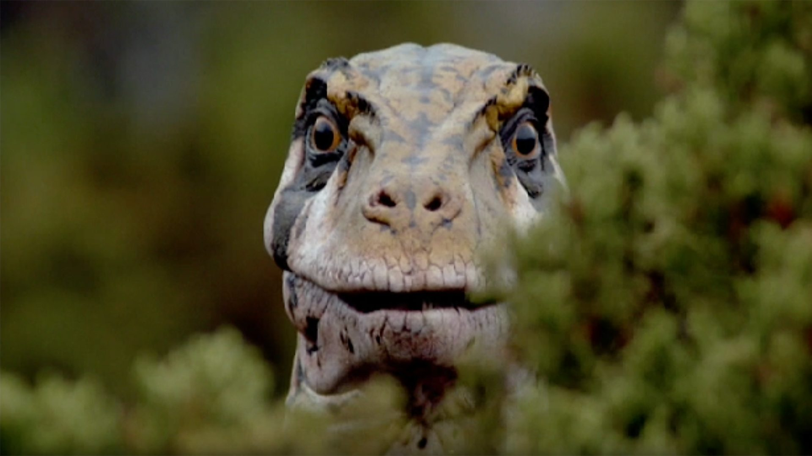
No caption available. Utahraptor still confused at how he ended up in Europe. He has become a little bit of a meme. That's understandable, as opposed to Postman Postosuchus, who is slightly more abstract.
Storytelling: 9
This episode attempts to focus on the story of the old male Ornithocheirus, even telling us his deadly fate as the very first scene. This works very well. There is a sense of ominous dread lingering over this episode.
There is a well known Utahraptor-based detour in this episode. I.e. the entire plot stops while the Utahraptor hunts. I was surprised on my latest rewatch that our main character is physically present during this, and how well the episode pacing covers this.
Perhaps my favourite detail is that, in a beautiful thematic moment, it is the birds that kill him. His final resting point before where he will perish (the mating ground) was violently cut short by a flock of aggravated avians, leaving him tired and hungry when he arrives to mate. His “tireless exertions under the blazing sun”, which bring to an end his glorious life, are perfectly set up beforehand. Then, as it is in nature, the next generation feeds upon his carcass.
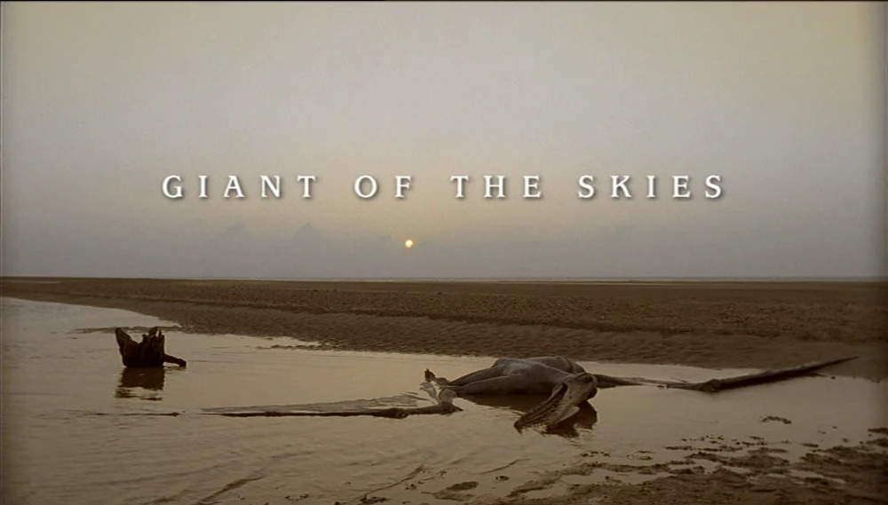
The title card for this episode, depicting the superlative Ornithocheirus model. It's a bold strategy to reveal your ending this early, but it absolutely pays off.
Ambience: 5
Ornitholestes theme has that Shakespearean tragedy vibe the series needs to exploit more. Haunting and epic. It plays constantly, making it a proper leitmotif. Cruel Seas take notes.
Creatures: 8
It’s a strong selection here of both flying and land-based creatures, all looking surprisingly great. Except the UTAH raptor. When the episode explicitly points out we’re in Europe as that’s the whole point of this final journey, it’s hard to ignore the UTAH raptor here. It’s not accuracy; it’s common sense. I would mind less if the model was good, but it isn’t particularly. Iguanodon is an unexpected highlight. Like Avatar, there is a slight question as to the lack of iconicity here, but unlike Avatar, this episode is actually good.
Spirits of the Ice Forest
Visuals: 7
We need to preface conversations about this episode by being honest that this is the budget episode. It’s the Doctor-Lite story. That’s not to say this episode necessarily needs to be rubbish, then, as Doctor-Lites have proven, but it does mean a reduction of scale. This is not surprising in the most costly documentary per minute ever produced. There are few creatures here, and little visual variety in environments. The latter is a key point, as one glance at the filming locations on any given episode reveal that despite often having only one environment per episode, this franchise takes great effort to vary the scenery. On the positive side, the one environment they did pick is very atmospheric.
Leaellynasaura (yes I had to google that because no I cannot spell it) and its animatronic look good. Conversely, the ‘Polar Allosaur’ looks like the visual representation of Manuel Ugarte’s footballing ability: horsedung.
Storytelling: 6
Similar to the Dippy creche, this plot’s focus on a large group harms the emotional connection the audience feels to the main characters. Furthermore, the story acts more as a collection of events which happen to the Leaellynasaura. The Muttaburrasaurus and Koolasuchus plotlines are entirely disconnected from the central narrative. The Winter serves as an effective antagonist, but the pacing results in a slight lack of drama.
Ambience: 4
Sadly, this is where my decision to call this category ambience has become disruptive. The music here is sub-par, despite being sufficiently eerie to convey this bizarre lost world. Yet there is an ambience to this episode, driven by that strangeness, that is undeniable. It is almost haunting at times. The Weta and Koolasuchus almost certainly contribute to this.
Creatures: 5
We love the Koolasuchus on this website, especially General Koolasuchus. This chonky amphibian with his pancake head is awesome. But the poor fellow is given mere scraps from the script, and we are starving out here for more of this goofy dude. Leaellynasaura is a passable protagonist, yet leagues below their competitors. Any and all other creatures are poor.
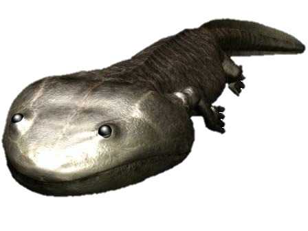
This beast is truly prehistoric. Amongst the last of his ancient dynasty, he was driven from his ancestral lands to the poles by the rise of crocodilians. Except it's hard to take him seriously when he looks so silly. Poor temnospondyls...
Death of a Dynasty
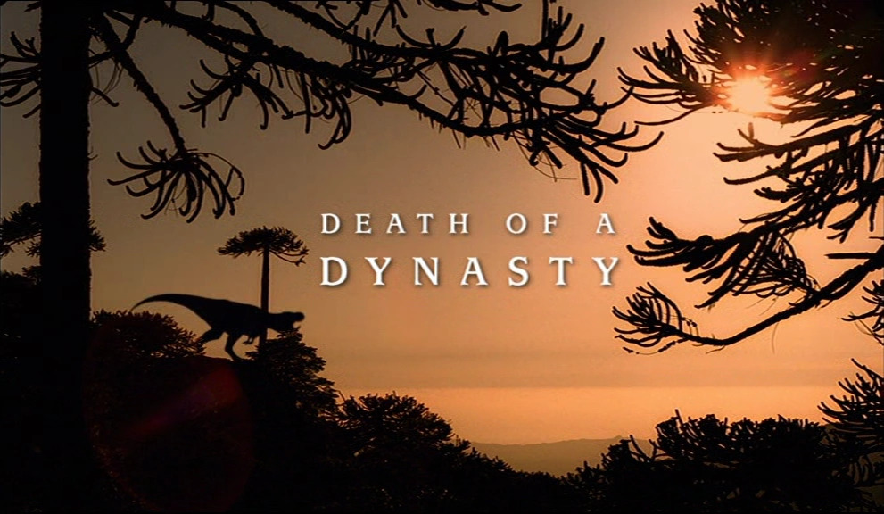
So much aura; so poor dinosaurs.
Visuals: 6
Yes this is the episode with the T-Rex, and therefore the most famous prehistoric ecosystem ever discovered. And yes it gets a 6. And I would hope, if you see the episode, the central problem becomes clear. The origin of this series is based upon the popularity of Jurassic Park, especially the Tyrannosaur present, and the audacious attempt to replicate Hollywood CGI with a British television budget. Yet this episodes’ cumbersome central carnivore doesn’t deserve to be in the same sentence as Rexy, and that kind of crime isn’t something you can get away with, despite a couple of aura farming moments. It’s foul. Look at it.
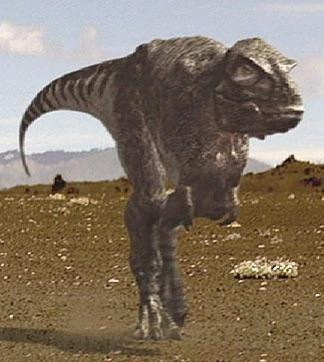
I am cherry picking here, but this is awful. The head is tiny and its legs are too long. It is almost never rendered correctly either, and the texturing on the skin just highlights how bad texturing was in 1999.
Furthermore, this episode is supposed to be about Hell Creek (but shouldn’t it be Hell’s Creek, really?), the most iconic of environments. This is a not even a poor imitation: it is instead an entirely different place, botching it into a bizarrely lush rocky volcano desert. Despite its beauty, it feels incongruous. Again, we resultingly run into the dust problem this series is plagued with.
Storytelling: 8
To the great relief of the shoddy quality of this episode, we see the score radically climb here. This, unsurprisingly, is not its fault. Any story, regardless of real quality, set in this period will be gifted from the sky with a wealth of meaning and emotion by the asteroid.
Current studies are very slightly, from my research, in favour of the idea dinosaurs were declining anyway before the asteroid struck. I personally, in the context of the ecological revolution they had just experienced (please research the Angiosperm Terrestrial Revolution if you’ve never encountered it - it changes the way you see the natural world), have always seen the dinosaurs as a little decadent, so this view is something I favour. What I am less fond of is the approach this series takes, which involves staging the episode in a quite aggressive ‘dying world’. Within the confines of this episode it is handled well.
The overarching structure at play here is one focussing on the mother raising the next generation, which is a good narrative to take, especially when the next generation’s time will soon be up. She is the last of her lineage.
Ambience: 3
The soundtrack improves by the ending, but the lack of a (memorable) T-Rex theme harms this score. The T-Rex roar is pathetic, too. I’m just glad this section is shorter than the others.
Creatures: 6
This series had six episodes to get better at its dinosaurs and it pulls out a generational stinker with the main character. And I’m not just talking about the outside - the underlying bone structure is poor. There is no animatronic to redeem our Temu Rexy, either. It also doesn’t include so many components of the Hell Creek lineup. Where are the Pachycephalosaurus, Triceratops, or Edmontosaurus? (I don’t care that Torosaurus and Anatotian are potentially indistinguishable from some mentioned above and are obsolete taxa). It’s like expecting Prime Man Utd, and receiving their Wolfsburg 2011 lineup instead. Still good, but not great.
The Results
| Episode | Visuals | Storytelling | Ambience | Creatures | Total |
|---|---|---|---|---|---|
| New Blood | 6 | 9 | 4 | 8 | 27 |
| Time of the Titans | 10 | 7 | 5 | 9 | 31 |
| Cruel Sea | 7 | 4 | 3 | 7 | 21 |
| Giant of the Skies | 9 | 9 | 5 | 8 | 31 |
| Spirits of the Ice Forest | 7 | 6 | 4 | 5 | 22 |
| Death of a Dynasty | 6 | 8 | 3 | 6 | 23 |
Conclusion
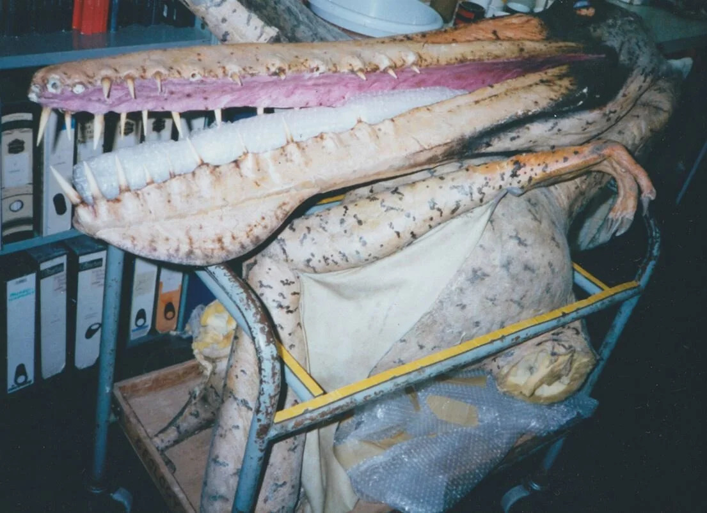
The sad fate of the Ornithocheirus model, which was used in Giant of the Skies. Many of the models went on to be used in displays in museums, and most encouragingly as teaching demonstrations in Universities. This model sits in a crate at the University of Portsmouth, and frankly has suffered a similar fate to its onscreen counterpart. Credit: Darren Naish for the image.
What this has highlighted to me is a discrepancy can arise between what the best episodes might be, and what I view in my head as episodes I like. I think fondly of Cruel Sea, because it is an enjoyable piece of television, and am filled with hatred about much of Death of a Dynasty, but their rankings suggest the quality is the inverse of opinion.
In terms of what is ‘expected’ in a WWD ranking, I’d say I was harsher than average on Cruel Sea. I think I’d like to have been a little harsher on Time of the Titans, but that’s the pain with illusions of objectivity. If you, or future me, is looking for what I’d rank first, it would be Giant of the Skies.